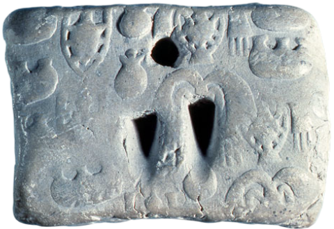
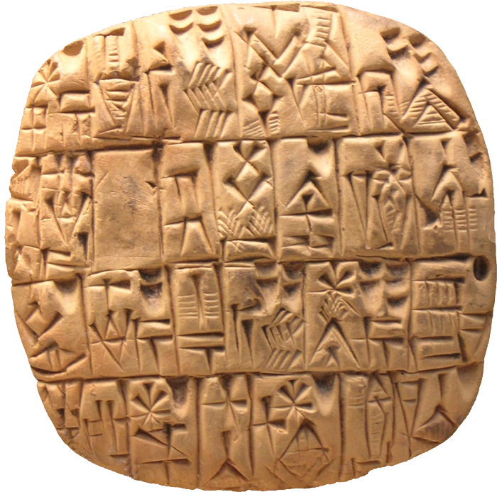
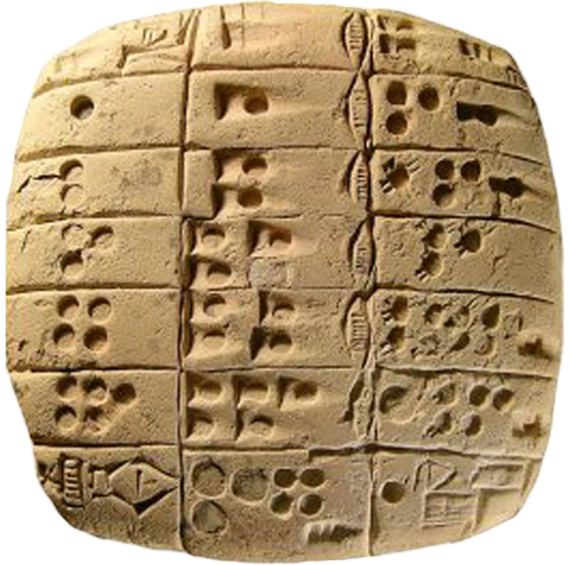

O „unitate” este acel lucru în virtutea căruia fiecare dintre lucrurile care există este numit unu. Un „număr” este un multiplu alcătuit din unități.
- Euclid, Elementele -
Începuturile
Perioada timpurie a matematicii este marcată de apariția primelor forme de înregistrare a informațiilor numerice și a primelor încercări de organizare logică a cunoștințelor despre lume. Înainte de dezvoltarea scrisului, oamenii foloseau obiecte fizice și simboluri pentru a ține evidența resurselor sau a timpului. Odată cu apariția civilizațiilor din Mesopotamia și Egipt, matematica a început să prindă contur ca instrument de administrare, arhitectură și astronomie. Aceste începuturi rudimentare au pus bazele dezvoltărilor matematice ulterioare.
Osul Ishango este un os descoperit în Republica Democrată Congo, datând de acum aproximativ 20.000 de ani. Este considerat unul dintre cele mai vechi obiecte matematice cunoscute. Osul are inscripții sub formă de crestături, grupate într-un mod care sugerează un sistem de numărare sau chiar o formă timpurie de calcul. Un aspect curios este că unele grupuri de crestături par să reflecte cunoștințe despre numere prime sau multiplicări – ceea ce indică o posibilă înțelegere abstractă timpurie.
Osul de la Ishango
Jetoane de Contabilitate din Mesopotamia erau obiecte din lut folosite în Mesopotamia, datând din mileniul al IV-lea î.Hr., pentru a ține evidența bunurilor. Aceste jetoane reprezentau diferite cantități și tipuri de produse și sunt considerate un precursor al scrisului cuneiform și al matematicii contabile. Este fascinant că aceste jetoane erau sigilate în bile de lut (bulle), unele dintre ele conținând o descriere cuneiformă pe exterior – un pas important către reprezentarea abstractă a informației.

Jeton de Contabilitate din Mesopotamia
Tăblițele Mesopotamiene sunt tăblițe de lut inscripționate cu simboluri cuneiforme, folosite de sumerieni și babilonieni. Pe multe dintre ele au fost descoperite tabele matematice, exerciții și probleme de aritmetică și geometrie – o dovadă a unei educații matematice avansate pentru acea epocă. Unele tăblițe păstrează probleme care seamănă cu exercițiile moderne de matematică, inclusiv ecuații pătratice și tabele de pătrate și cuburi.

Tăbliță Mesopotamiană
Tabelul Înmulțirii din Sumer este una dintre cele mai vechi tabele de înmulțire cunoscute, scrisă pe o tăbliță de lut. Această tablă folosea un sistem de numerație sexagesimal (baza 60), ceea ce a influențat ulterior împărțirea timpului și a cercului. Este interesant cum, deși folosim sistemul zecimal, moștenim de la sumerieni structuri precum cele 60 de secunde într-un minut și 360 de grade într-un cerc.

Tabelul Înmulțirii din Sumer
Tăblița Babiloniană (Plimpton 322) este o tăbliță babiloniană datând din aproximativ 1800 î.Hr., considerată de unii istorici o listă de triplete pitagoreice. Relevanța sa constă în folosirea anticipată a principiului teoremei lui Pitagora, cu mult înaintea lui Pitagora însuși. Arată nivelul înalt de dezvoltare matematică din Babilon. O curiozitate este că ordinea și formatul datelor de pe tăbliță sugerează o metodă sistematică de generare a tripletelor, ceea ce indică o teorie matematică avansată, nu doar observație empirică.